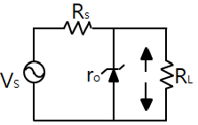
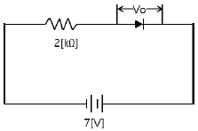
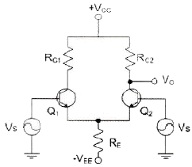
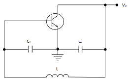
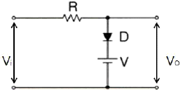
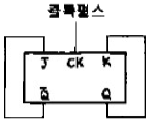
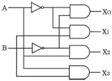
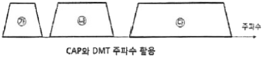
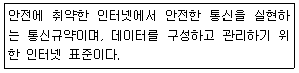
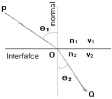

정보통신기사(구) (2018-10-06 기출문제)
1과목: 디지털 전자회로
1. 다음 회로에서 안정계수(Sv) 값이 증가하기 위한 조건으로 옳은 것은?

- Vs를 증가시킨다.
- Rs를 감소시킨다.
- 출력전압(ΔVL)을 감소시킨다.
- 출력전류(ΔLL)를 감소시킨다.
(정답률: 68%)

2. 다음 그림과 같이 2[kΩ]의 저항과 실리콘(Si)다이오드의 직렬 회로에서 다이오드 양단의 전압 크기는 얼마인가?

- 0[V]
- 1[V]
- 5[V]
- 7[V]
(정답률: 68%)
3. 다음 중 부궤환 증폭기의 특성이 아닌 것은?
- 잡음이 감소된다.
- 주파수 특성이 개선된다.
- 비직선 왜곡이 감소된다.
- 안정도가 다소 감소된다.
(정답률: 73%)
4. 다음 증폭기 회로에서 RE가 증가하면 어떤 현상이 일어나는가?

- 차동이득이 감소한다.
- 차동이득이 증가한다.
- 동상이득이 감소한다.
- 동상이득이 증가한다.
(정답률: 57%)
5. 다음 중 궤환회로에서 발진이 일어나는 조건인 바크하우젠 발진조건에 관한 설명으로 틀린 것은? (단, A는 증폭부의 증폭률이고 β는 궤환부의 궤환율이다.)
- 발진조건은 |Aβ|= 1 이다.
- Aβ＜1이면 발진이 일어나지 않는다.
- Aβ＞1이면 발진은 되나 이득이 계속 증가하여 클리핑이 일어나면서 불안정하다.
- Aβ=1은 발진조건으로 일정한 진폭의 직류출력이 발생한다.
(정답률: 54%)
6. 전류 궤환 증폭기의 출력 임피던스는 궤환이 없을 경우에 비해 어떻게 변화하는가?
- 변화가 없다.
- 0이 된다.
- 감소한다.
- 증가한다.
(정답률: 61%)
7. 그림과 같은 발진회로에서 200[kHz]의 발진주파수를 얻고자 한다. C1과 C2의 값이 0.001[μF]이라면 L의 값은 약 얼마인가?

- 2.21[mH]
- 1.27[mH]
- 2.31[mH]
- 1.35[mH]
(정답률: 54%)
8. 발진회로의 궤환루프의 감쇠가 0.5인 경우 발진을 유지하기 위한 증폭회로의 전압이득은?
- 전압이득은 2.0이어야 한다.
- 전압이득은 1.5이어야 한다.
- 전압이득은 1.0이어야 한다.
- 전압이득은 0.5보다 적어야 한다.
(정답률: 76%)
9. 다음 중 비동기 검파에 대한 설명으로 옳은 것은?
- 국부발진 신호와 입력신호를 곱하게 하는 곱셈 검파기이다.
- 송수신측과 수신측이 동일한 반송파를 이용한다.
- 주로 ASK와 FSK에 이용된다.
- 동기검파보다 복조시스템이 복잡하다.
(정답률: 59%)
10. 주파수 변조에서 신호주파수가 4[kHz], 최대 주파수 편이가 20[kHz]이면 변조지수는?
- 0.2
- 5
- 16
- 80
(정답률: 78%)
11. 간접 FM변조방식(Armstrong방식)에서의 필요 요소가 아닌 것은?
- 가산기(Adder)
- 평형 변조기(Balanced Modulation)
- 위상천이기(90˚ Phase Shifter)
- 진폭제한기(Limiter)
(정답률: 63%)
12. AM변조에서 100[%] 변조인 경우 그 변조 출력 전력이 6[kW]일 때, 반송파 성분의 전력은 얼마인가?
- 1[kW]
- 1.5[kW]
- 2[kW]
- 4[kW]
(정답률: 59%)
13. 다음 그림과 같은 회로에 대한 설명으로 옳은 것은?

- 입력 파형의 아랫부분을 잘라내는 베이스 클리퍼 회로이다.
- 입력 파형의 윗부분을 잘라내는 피크 클리퍼 회로이다.
- 직렬형 베이스 클리퍼 회로이다.
- 입력 파형의 위, 아래 부분을 일정하게 잘라내는 클리퍼 회로이다.
(정답률: 74%)
14. RC 회로의 출력에서 최종치의 10[%]~90[%]까지 얻는데 소요되는 시간을 무엇이라 하는가?
- 지연 시간
- 하강 시간
- 상승 시간
- 전이 시간
(정답률: 79%)
15. 다음 중 Master-Slave 플립플롭은 어떠한 현상을 해결하기 위한 플립플롭인가?
- 지연 현상
- Race 현상
- Set 현상
- Toggle 현상
(정답률: 76%)
16. 마스터 슬레이브 JK-FF에서 클럭 펄스가 들어올 때마다 출력 상태가 반전되는 것은?
- J=0, K=0
- J=1, K=0
- J=0, K=1
- J=1, K=1
(정답률: 75%)
17. JK 플립플롭(Flip-Flop)을 다음 그림과 같이 연결했을 때 결과치가 같은 플립플롭은?

- D 플립플롭
- RS 플립플롭
- T 플립플롭
- MS 플립플롭
(정답률: 62%)
18. 다음 중 전감산기의 입력과 관계가 없는 것은?
- 감수
- 상위에서 자리 빌림
- 피감수
- 하위에서 자리 빌림
(정답률: 76%)
19. 다음은 어떤 논리 회로인가?

- 인코더
- 디코더
- RS플립플롭
- JK플립플롭
(정답률: 72%)
20. 25진 리플 카운터를 설계할 경우 최소한 몇 개의 플립플롭이 필요한가?
- 4개
- 5개
- 6개
- 7개
(정답률: 82%)
2과목: 정보통신 시스템
21. 정보통신망을 구성할 때 두 개 이상 다수의 단말기가 하나의 통신회선에 연결되어 정보의 송수신을 행하는 방식은?
- 멀티포인트 방식
- 멀티플렉싱 방식
- 포인트 투 포인트 방식
- 집중 방식
(정답률: 64%)
22. 다음 중 혼합형 동기식 전송방식에 대한 설명으로 틀린 것은?
- 동기식 전송과 비동기식 전송을 혼합한 것이다.
- 문자와 문자 사이에 휴지 시간이 있다.
- 송신측과 수신측이 비동기 상태에 있어야 한다.
- 비동기식보다는 전송 속도가 빠르다.
(정답률: 76%)
23. 다음 중 경찰·소방·국방·지방자치단체 등 관련 기관의 무선통신망을 하나로 통합해 국민의 건강과 안전 보호, 국가적 피해 최소화 등을 위해 추진하고 있는 국가재난안전통신망은?
- PS-LTE
- 3GPP
- Wibro
- IEEE 802.11s
(정답률: 83%)
24. 다음 중 가상회선 교환 방식의 설명으로 틀린 것은?
- 데이터 전송은 연결 설정, 데이터 전송, 연결 해제의 세 단계로 이루어진다.
- 전송할 데이터는 패킷으로 분할되어 전송된다.
- 연결이 설정되고 나면 모든 패킷은 동일한 경로를 따라 전송된다.
- 각 페킷마다 상이한 경로가 설정된다.
(정답률: 74%)
25. 다음 중 TCP/IP 프로토콜에 관한 설명으로 거리가 먼 것은?
- TCP/IP는 De jure(법률) 표준이다.
- IP는 ARP, RARP, ICMP, IGMP를 포함한다.
- 인터넷에서 사용하는 프로토콜이다.
- TCP는 신뢰성 있는 스트림 전송 포트 대 포트 프로토콜이다.
(정답률: 81%)
26. 프로토콜의 주요 요소 중에서 데이터 전송시기와 전송속도에 관한 특성을 나타내는 것은?
- 타이밍
- 구문
- 의미
- 표준
(정답률: 86%)
27. 다음 중 X.25 표준에 대한 설명으로 틀린 것은?
- ITU-T가 개발한 패킷 교환 방식의 장거리 통신망 표준이다.
- X.25 계층 구조는 물리계층, 프레임계층, 상위계층으로 구성되어 있다.
- 패킷 방식 단말이 데이터 교환을 하기 위해 어떻게 패킷 네트워크에 연결되는가를 정의한다.
- 패킷의 다중화는 비동기식 TDM을 사용한다.
(정답률: 70%)
28. 발신지로부터 목적지로 패킷을 전달하는 기능을 수행하는 OSI 7 계층은?
- 물리계층
- 데이터링크계층
- 네트워크계층
- 전송계층
(정답률: 65%)
29. 전화통신망(PSTN)에서 최번시 1시간에 발생한 호(Call)수가 240이고, 평균통화시간이 2분일 때 이 회선의 호량(Erlang)은?
- 0.1
- 8
- 40
- 360
(정답률: 84%)
30. 다음 중 위성통신에서 다운링크(Down Link)에 대한 설명으로 옳은 것은?
- 위성으로부터 송신 지구국으로의 회선
- 위성으로부터 수신 지구국으로의 회선
- 송신 지구국으로부터 수신 지구국으로의 회선
- 수신 지구국으로부터 송신 지구국으로의 회선
(정답률: 81%)
31. 위성통신의 다중접속방법으로 옳지 않은 것은?
- FDMA
- TDMA
- CDMA
- WDMA
(정답률: 75%)
32. 다음 중 xDSL회선의 변복조 방식인 CAP(Carrier-less Amplitude/Phase)와 DMT(Discrete Multi-Tone)의 주파수 배치표로 옳은 것은?

- CAP방식 : ㉮ 음성전화(POTS), ㉯ 역방향(Upstream), ㉰ 순방향(Downstream)
- CAP방식 : ㉮ 순방향(Downstream), ㉯ 역방향(Upstream), ㉰ 음성전화(POTS)
- DMT방식 : ㉮ 순방향(Downstream), ㉯ 역방향(Upstream), ㉰ 음성전화(POTS)
- DMT방식 : ㉮ 음성전화(POTS), ㉯ 순방향(Downstream), ㉰ 역방향(Upstream)
(정답률: 77%)
33. 패킷 교환망(PSDN)에서 패킷 교환망 접속 기능을 갖고 있지 않은 비패킷 단말장치를 패킷 교환망으로 접속시켜주는 기능을 수행하는 장치는 무엇인가?
- TAD
- RAD
- PAD
- WAD
(정답률: 82%)
34. 다음 중 이동 통신의 무선 다중 접속 방식 중 FDMA 방식의 특징이 아닌 것은?
- 아날로그 방식이고, 주파수를 이용하여 다중접속한다.
- 회선용량이 부족하고 간섭에 취약하다.
- 수신시에는 필터에 의해 필요한 반송파를 선택한다.
- 가입자 단위로 서로 다른 코드를 할당하므로 통신의 비밀이 보장된다.
(정답률: 69%)
35. 모든 사물에 센서 및 통신 기능을 결합해 지능적으로 정보를 수집하고 상호 전달하는 네트워크는?
- M2M(Machine to Machine)
- SDR(Software Defined Radio)
- BcN(Broadband Convergence Network)
- IPS(Interusion Prevention System)
(정답률: 79%)
36. 다음 중 방화벽의 구성형태에 해당하지 않은 것은?
- 패킷 필터링
- 서킷 게이트웨이
- 프록시 어플리케이션 게이트웨이
- SSL-VPN
(정답률: 73%)
37. 다음 중 인터넷보호 관련 표준프로토콜에 대한 설명으로 맞는 것은?

- IPSec
- MPLS
- VPN
- Fire Wall
(정답률: 80%)
38. 대칭키 암호화 방식을 사용하여 4명이 통신을 한다고 할 때, 4명이 서로 간 비밀통신을 하기 위해 필요한 비밀키의 수는?
- 4
- 6
- 8
- 10
(정답률: 82%)
39. 보안의 중요성이 점차 증가하고 있다. 다음 중 보안 문제가 심각해지는 원인이 아닌 것은?
- 개방형 네트워크
- 패쇄형 네트워크
- 인터넷의 확산
- 전자상거래 등 각종 응용서비스의 출현
(정답률: 87%)
40. 다음 중 재난복구 계획에 대한 설명으로 옳지 않은 것은?
- 계획수립 그룹을 구성한다.
- 위험 평가와 감사를 수행한다.
- 네트워크와 애플리케이션의 복구 우선순위를 정한다.
- 재난발생시 모든 인원이 모든 복구작업에만 투입될 수 있도록 인원계획을 수립한다.
(정답률: 86%)
3과목: 정보통신 기기
41. 다음 중 범용단말장치가 아닌 것은?
- POS(Point of Sale)
- OMR(Optical Mark Reader)
- MICR(Magnetic Ink Character Reader)
- CRT(Cathode Ray Tube)
(정답률: 66%)
42. DOCSIS(Data Over Cable Service Interface Specifications)라는 표준 인터페이스 규격을 활용하는 단말은?
- 케이블 모뎀
- 휴대폰
- 스마트 패드
- 유선 일반전화기
(정답률: 84%)
43. 다음 중 통신제어 장치의 설명으로 올바른 것은?
- 중앙처리 장치의 부하를 가중시킨다.
- 통신회선의 감시 및 접속, 전송오류검출을 수행한다.
- 회선접속장치를 원격처리장치로 연결한다.
- 중앙처리장치의 제어를 받지 않는다.
(정답률: 80%)
44. 다음 중 DSU(Digital Service Unit)에 대한 설명으로 옳은 것은?
- 전송신호 형태는 Analog 신호이다.
- 변조 방식으로는 주로 AMI(Bipolar)이다.
- 전송 속도는 1.2~9.6[kbps]이다.
- 사용 Network은 음성급 전용망, 교환망이다.
(정답률: 72%)
45. 라우터를 로컬 내에서만 연결하여 관리할 수 있는 인터페이스(포트)는 무엇인가?
- 이더넷 포트
- 직렬 포트
- 콘솔 포트
- Auxiliary 포트
(정답률: 72%)
46. 다음 중 실제로 보낼 데이터가 있는 터미널에만 동적인 방식으로 각 부채널에 시간폭을 할당하는 것은?
- 지능 다중화기
- 광대역 다중화기
- 주파수분할 다중화기
- 역 다중화기
(정답률: 75%)
47. 다음 중 모뎀의 수신기 구성요소가 아닌 것은?
- 변조기(Modulator)
- 등화기(Equalizer)
- 복조기(Demodulator)
- 디코더(Decoder)
(정답률: 60%)
48. ITU-T의 모뎀표준으로 14,400[bps] 전송을 지원하는 최초의 표준은?
- V.32
- V.32bis
- V.34bis
- V.90
(정답률: 65%)
49. 팩시밀리 중 MH(Modified Huffman)와 MR(Modified Read)방식의 데이터 압축 기술을 사용하며, A4 표준 원고인 경우 전송 시간이 약 1분 정도 소요되는 것은 무엇인가?
- G1
- G2
- G3
- G4
(정답률: 70%)
50. 다음 중 CATV의 기본 구성요소로 틀린 것은?
- 헤드엔드
- 중계전송망
- 가입자설비
- 모뎀
(정답률: 67%)
51. 다음 중 화상회의 시스템 설명으로 적합하지 않은 것은?
- 동화상처리 방식에는 프레임 다중 방식 등이 있다.
- 음성처리 과정에서 하울링이나 에코현상이 일어날 수 있다.
- 음성, 영상압축 기술이 필요하며 광대역 고속 통신망이 유리하다.
- 정지화상 통신회의 시스템은 협대역 전송로를 사용하므로 가격이 비싸다.
(정답률: 85%)
52. 국내 HDTV방식의 1채널의 주파수 대역폭은?
- 6[MHz]
- 9[MHz]
- 18[MHz]
- 27[MHz]
(정답률: 82%)
53. 다음 중 영상통신에서 지원하는 H.264에 대한 설명으로 틀린 것은?
- 데이터는 직사각형 비디오 프레임을 지원한다.
- 움직임 보상의 최소 블록 크기는 4X4이다.
- 움직임 벡터(추정 및 보상)의 정확도는 1/4화소로 지원한다.
- 디코더 내부의 디블록킹 필터는 사용하지 않는다.
(정답률: 76%)
54. 다음 중 AM 수신기의 감도를 향상시키기 위한 방법으로 틀린 것은?
- 주파수 변환회로의 변환 컨덕턴스(Conductance)가 큰 것을 사용한다.
- 초단 증폭기의 잡음이 작은 것을 사용한다.
- 중간 주파수 증폭기의 대역폭을 넓게 한다.
- 안테나 결합회로 및 각 증폭단의 이득을 크게 한다.
(정답률: 72%)
55. 다음 중 강우로 인한 위성통신 신호의 감쇠를 보상하기 위한 방법이 아닌 것은?
- Site Diversity
- Angle Diversity
- Orbit Diversity
- Beam Diversity
(정답률: 73%)
56. 셀룰러(Cellular) 방식의 이동통신에서 입력속도 9.6[kbps], 출력속도 1.2288[Mbps]일 때 확산이득은 약 얼마인가?
- 15.03[dB]
- 19.40[dB]
- 21.07[dB]
- 24.50[dB]
(정답률: 72%)
57. 다음 중 디지털 영상회의 시스템 기술에 속하지 않는 것은?
- 동화상처리
- 음성 처리
- 벡터 양자화
- 송·수신 주사방식
(정답률: 65%)
58. 다음 중 비디오텍스의 하드웨어 구성요소가 아닌 것은?
- 정보 통신망
- 사용자 단말기
- 중앙 정보 센터
- 헤드엔드
(정답률: 75%)
59. WPAN(Wireless Personal Area Network) 기술의 확산으로 멀티미디어 기기간 연결이 많아지고 다양한 서비스가 제공되고 있다. 다음 중 WPAN 기술에 해당되지 않는 것은?
- UWB
- Zigbee
- Bluetooth
- PLC
(정답률: 78%)
60. 멀티미디어 및 하이퍼미디어의 저장방식과 다중화방식 등을 규정하는 국제표준 규격은?
- MHEG
- HTML
- MPEG
- XML
(정답률: 64%)
4과목: 정보전송 공학
61. 다음 중 양자화 간격에 따른 분류에 해당하지 않는 것은?
- 선형양자화
- 비선형양자화
- 적응양자화
- 복합양자화
(정답률: 59%)
62. 다음 설명 중 틀린 것은?
- ADM은 양자화기의 스텝 크기를 입력신호에 따라 적응시키는 방법이다.
- PCM은 연속적인 아날로그 신호의 진폭을 일정한 간격으로 변환하는 방법이다.
- DM은 예측 값과 측정값의 차이를양자화하는 변조 방법이다.
- DPCM은 진폭 값과 예측 값과의 차이만을 양자화하는 방법이다.
(정답률: 57%)
63. 5단 귀환 시프트 레지스터(Shift Register)로 구성된 PN부호 발생기의 출력 데이터 계열의 주기는?
- 5
- 16
- 31
- 32
(정답률: 62%)
64. 양자화 잡음은 다음 중 어느 방식에서 주로 발생하는가?
- PDM
- PPM
- PCM
- PWM
(정답률: 71%)
65. 제한대역매체를 통해 기본파와 제3고조파를 포함하는 디지털 신호를 전송하는데 필요한 대역폭은 얼마인가? (단, n[bps]로 디지털 신호를 보내고자 한다.)
- n[Hz]
- 2n[Hz]
- 4n[Hz]
- 6n[Hz]
(정답률: 74%)
66. 가장 널리 사용되는 100[Mbps] 디지털 전송용 UTP 케이블의 접속에 사용되는 8핀 커넥터 표준 규격은?
- RS-22
- RS-42
- RJ-22
- RJ-45
(정답률: 75%)
67. 다음 중 광섬유에 대한 설명으로 틀린 것은?(오류 신고가 접수된 문제입니다. 반드시 정답과 해설을 확인하시기 바랍니다.)
- 모드 분산은 단일모드 광섬유에서만 발생한다.
- 재료분산은 광섬유의 재질인 석영 유리의 굴절률이 전파하는 빛의 파장에 따라 변화하면서 생긴다.
- 광소자란 빛을 발생하고 처리하고 감지하는 기능이 있는 전자장치를 말한다.
- 발광다이오드는 자연방출현상으로 빛을 발생하며, 레이저다이오드는 유도 방출현상으로 빛을 발생한다.
(정답률: 72%)
68. 다음 중 광섬유 전송매체와 비교했을 때 일반적인 트위스티드 페어(Twisted Pair) 케이블에 대한 설명으로 잘못된 것은?
- 신호의 감쇠 및 간섭에 약하다.
- 아날로그 및 디지털 전송에 모두 사용할 수 있다.
- 비용이 저렴한 편이다.
- 대역폭이 넓다.
(정답률: 70%)
69. 스넬의 법칙(Snell's law)이란 광선 또는 전파가 서로 다른 매질의 경계면에 입사하여 통과할 때 입사각과 굴절각과의 관계를 표현한 법칙이다. 다음 그림과 같이 굴절률이 n1과 n2로 서로 다른 두 매질이 맞닿아 있을 때 매질을 통과하는 빛의 경로는 매질마다 광속이 다르므로 휘게 되는데, 그 휜 정도를 빛의 입사 평면상에서 각도로 표시하면 과 가 된다. 이때 스넬의 법칙으로 n1, n2 Ɵ1, Ɵ2의 상관관계를 올바르게 정의한 것은?

- n1+cosƟ1 = n2+sinƟ2
- n1+cosƟ2 = n2+sinƟ2
- n1(sinƟ1) = n2(sinƟ2)
- n1(sinƟ2) = n2+(sinƟ1)
(정답률: 82%)
70. 다음 중 HDLC 프로토콜의 특징이 아닌 것은?
- 비트 방식 프로토콜의 일종
- 단방향, 반이중, 전이중 전송에 모두 사용
- 데이터 링크 형식으로 Point to Point, Multipoint 및 Loop가 가능
- 에러제어 방식으로 정지대기 ARQ 사용
(정답률: 58%)
71. 다음 중 HDLC 데이터 전송 모드에서 복합국끼리는 상대방 복합국의 허가가 없어도 명령과 응답을 송신할 수 있는 모드는 무엇인가?
- 비동기 평형모드(ABM)
- 정규 응답모드(NRM)
- 비동기 응답모드(ARM)
- 절단모드(DCM)
(정답률: 59%)
72. 다음 통신방식 중 요금과 급여계산 및 경영자료 작성 등에 주로 사용되는 방식은?
- 일괄 처리 방식
- 온라인 방식
- 직렬 전송 방식
- 병렬 전송 방식
(정답률: 74%)
73. 기호속도가 1[kHz]이고 4개의 기호확률이 1/2, 1/4, 1/8, 1/8일 때 엔트로피율은 얼마인가?
- 1,750[bps]
- 1,850[bps]
- 1,900[bps]
- 2,000[bps]
(정답률: 71%)
74. 다음 중 IPv4와 IPv6의 연동 방법으로 틀린 것은?
- 이중 스텍(Dual Stack)
- 터널링(Tunneling)
- IPv4/IPv6 변환(Translation)
- 라우팅(Routing)
(정답률: 75%)
75. 다음 중 고속 LAN으로 대학캠퍼스나 공장같이 한 곳에 모여 있는 LAN들을 연결하는데 주로 사용되는 것은?
- FDDI
- ASK
- QAM
- FSK
(정답률: 82%)
76. 다음 중 네트워크를 구성하는 기본 요소가 아닌 것은?
- 리피터
- 라우터
- 허브
- 태그
(정답률: 80%)
77. 다음 중 TCP와 UDP 헤더의 구조에 대한 설명으로 틀린 것은?
- TCP세그먼트의 헤더는 8바이트인 반면, UDP는 20바이트의 크기를 갖는다.
- TCP 포트 번호는 UDP 포트 번호와 서로 독립적이다.
- TCP에서는 강제적으로 검사합(Checksum)을 수행하는 반면, UDP는 검사합을 선택적으로 수행한다.
- UDP는 비연결형 방식이고, TCP는 연결형 방식이다.
(정답률: 75%)
78. 통신속도가 2,000[bps]인 회선에서 1시간 전송했을 때, 에러 비트수가 36[bit]였다면, 이 통신회선의 비트 에러율은 얼마인가?
- 2.5 X 10-6
- 2.5 X 10-5
- 5 X 10-6
- 5 X 10-5
(정답률: 72%)
79. 다음 중 프로토콜의 주요 요소에 해당하지 않는 것은?
- 구문(Syntax)
- 실체(Entity)
- 의미(Semantics)
- 타이밍(Timing)
(정답률: 83%)
80. IP 통신망의 경로 지정 통신 규약의 하나로서 경유하는 라우터의 대수(또는 홉)에 따라 최단 경로를 동적으로 결정하는 거리 벡터 알고리즘을 사용하는 프로토콜은?
- RIP(Routing Information Protocol)
- OSPF(Open Shortest Path First)
- BGP(Border Gateway Protocol)
- DHCP(Dynamic Host Configuration Protocol)
(정답률: 78%)
5과목: 전자계산기일반 및 정보통신설비기준
81. 16비트 명령어 형식에서 연산코드 5비트, 오퍼랜드1은 3비트, 오퍼랜드2는 8비트일 경우, ⓐ 연산종류와 사용할 수 있는 ⓑ 레지스터의 수를 올바르게 나열한 것은?
- ⓐ 32가지, ⓑ 512
- ⓐ 31가지, ⓑ 8
- ⓐ 32가지, ⓑ 8
- ⓐ 8가지, ⓑ 511
(정답률: 73%)
82. 전자계산기 소프트웨어는 시스템 소프트웨어와 응용 소프트웨어의 두 가지 종류로 구분될 수 있다. 다음 중 시스템 소프트웨어가 아닌 것은?
- 과학용 프로그램
- 운영 시스템
- 데이터 베이스 관리 시스템
- 통신 제어 프로그램
(정답률: 74%)
83. 10진수 (38)10을 2진수로 올바르게 변환한 것은?
- (100100)2
- (100101)2
- (100110)2
- (100111)2
(정답률: 80%)
84. 다음 중 자료의 병렬전송을 직렬전송으로 변경하는 레지스터는?
- 명령 레지스터(IR)
- 메모리 주소 레지스터(MAR)
- 메모리 버퍼 레지스터(MBR)
- 쉬프트 레지스터(Shift Register)
(정답률: 77%)
85. 접근시간(Access Time)과 사이클시간(Cycle Time)에 관한 설명으로 틀린 것은?
- 사이클시간이 접근시간보다 대개 시간이 더 걸린다.
- 접근시간은 메모리로부터 정보를 거쳐오는 데 걸리는 시간이다.
- 접근시간은 주기억장치에만 관계되며 보조기억장치와는 상관이 없다.
- 접근시간은 메모리로부터 정보를 가지고 나와서 다시 재 기억시키는 데 걸리는 시간이다.
(정답률: 67%)
86. 다음 중 컴퓨터의 운영체제에서 로더(Loader)의 주요 기능이 아닌 것은?
- 프로그램과 프로그램 간의 연결(Linking)을 수행한다.
- 출력 데이터에 대해 일시 저장(Spooling)기능을 수행한다.
- 프로그램이 실행될 수 있도록 번지수를 재배치(Relocation)한다.
- 프로그램 또는 데이터가 저장될 번지수를 계산하고 할당(Allocation)한다.
(정답률: 72%)
87. 파일 관리자는 파일 구조에 따라 각기 다른 접근 방법으로 관리한다. 다음 중 저장공간의 효율성이 가장 높은 파일 구조는 어느 것인가?
- 직접 파일(Direct File)
- 순차 파일(Sequential File)
- 색인 순차 파일(Indexed Sequential File)
- 분할 파일(Partitioned File)
(정답률: 60%)
88. 다음 중 운영체제가 제공하는 소프트웨어 프로그램이 아닌 것은?
- 스택(Stack)
- 컴파일러(Compiler)
- 로더(Loader)
- 응용 패키지(Application Package)
(정답률: 62%)
89. 디스크 오류가 발생하였을 때, 디스크를 재구성하지 않고 복사된 것을 대체함으로써 데이터를 복구할 수 있는 RAID 레벨(Level)은?
- RAID 0
- RAID 1
- RAID 3
- RAID 5
(정답률: 65%)
90. 몇 개의 관련 있는 데이터 파일을 조직적으로 작성하여 중복된 데이터 항목을 제거한 구조를 무엇이라 하는가?
- Data File
- Data Base
- Data Program
- Data Link
(정답률: 80%)
91. 다음 중 전기통신사업자가 제공하는 보편적 역무의 구체적인 내용을 정할 때 고려사항이 아닌 것은?
- 사회복지 증진
- 정보화 촉진
- 공공의 이익과 안전
- 역무의 보급 방법
(정답률: 60%)
92. 방송통신을 행하기 위하여 계통적 유기적으로 연결·구성된 방송통신 설비의 집합체는?
- 전화망
- 전송설비
- 전원설비
- 방송통신망
(정답률: 78%)
93. 방송통신재난을 신속히 수습·복구하기 위한 방송통신재난관리기본 계획을 수립하는 곳은?
- 한국통신(KT)
- 방송통신위원회
- 소방청
- 행정안전부
(정답률: 76%)
94. 다음 중 통신망의 보전 및 운영관리기준에 해당하지 않는 것은?
- 보전 및 운영기준을 설정하고 이에 관한 각종 데이터를 집계·관리한다.
- 상호접속을 하는 경우 설계 시 접속대상 설계공정을 명확히 한다.
- 상호접속에 대한 작업의 분담, 책임범위 등을 명확히 한다.
- 통신망의 개량 및 교체주기를 짧게 관리한다.
(정답률: 80%)
95. 원도급, 하도급, 위탁 그 밖에 명칭이 무엇이든 공사를 완공할 것을 약정하고, 발주자가 그 일의 결과에 대하여 대가를 지급할 것을 약정하는 계약을 무엇이라 하는가?
- 수급
- 도급
- 용역
- 감리
(정답률: 71%)
96. 다음 중 과학기술정보통신부장관이 소속 공무원으로 하여금 방송통신 설비를 설치·운영하는 자의 설비를 조사하거나 시험하게 할 수 있는 경우가 아닌 것은?
- 유지·보수중인 방송통신설비인 경우
- 국가비상사태에 대비하기 위한 경우
- 재해·재난 예방을 위한 경우 및 재해·재난 발생한 경우
- 방송통신설비 관련 시책을 수립하기 위한 경우
(정답률: 70%)
97. 다음 중 정보통신공사업의 운영에 대한 설명으로 옳지 않은 것은?
- 공사업을 양도할 수 있다.
- 공사업자인 법인 간에 합병할 수 있다.
- 공사업자인 법인을 분할하여 설립할 수 있다.
- 합병에 의하여 설립된 법인은 소멸되는 법인의 지위를 승계하지 못한다.
(정답률: 78%)
98. 다음 중 방송통신을 통한 국민의 복리 향상과 방송통신의 원활한 발전을 위하여 수립하고 공고하는 방송통신기본계획에 포함되는 사항이 아닌 것은?
- 방송통신서비스에 관한 사항
- 방송정보통신공사업의 연구에 관한 사항
- 방송통신콘텐츠에 관한 사항
- 방송통신기술의 진흥에 관한 사항
(정답률: 61%)
99. 다음 중 공동주택에 홈네트워크를 설치하는 경우 갖추어야 할 홈네트워크 장비에 해당하지 않는 것은?
- 집중구내통신실
- 단지네트워크장비
- 폐쇄회로텔레비전장비
- 홈게이트웨이
(정답률: 66%)
100. 다음 중 정보통신공사업에 종사하는 정보통신기술자에 관한 설명으로 옳지 않은 것은?
- 정보통신기술자는 동시에 두 곳 이상의 공사업체에 종사할 수 없다.
- 동일한 종류의 공사인 경우 1명의 정보통신기술자가 다수의 공사를 관리할 수 있다.
- 정보통신기술자는 자기의 경력수첩이나 기술자격증을 대여하여서는 아니 된다.
- 정보통신기술자는 타인에게 자기의 성명을 사용하여 용역 또는 공사를 하게 하여서는 아니 된다.
(정답률: 78%)